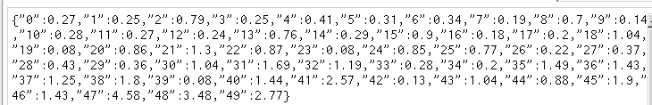
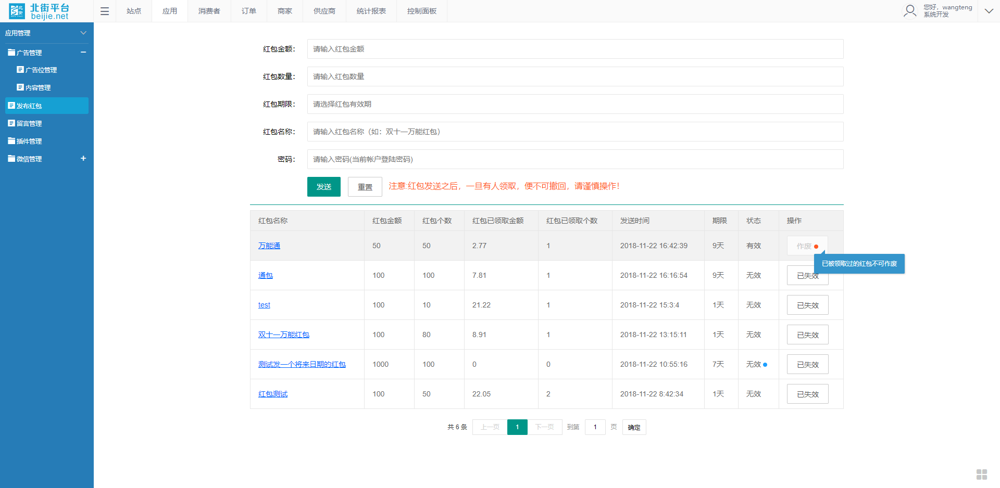
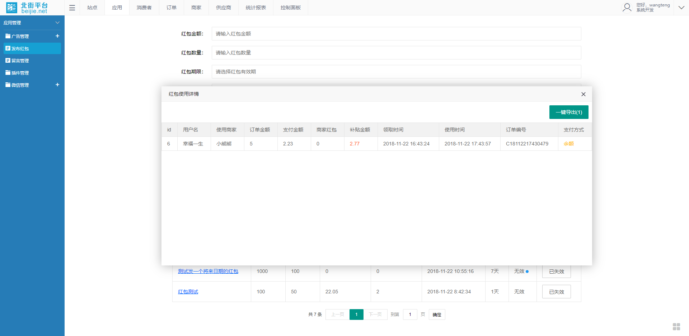
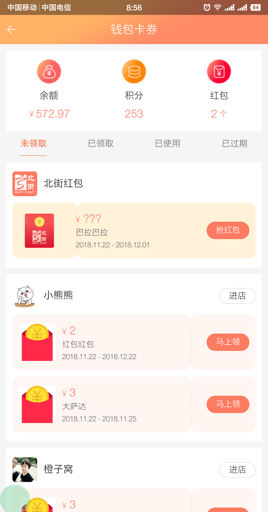
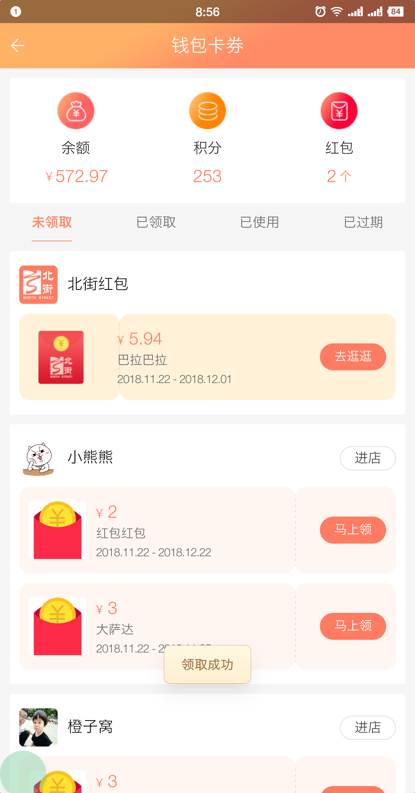
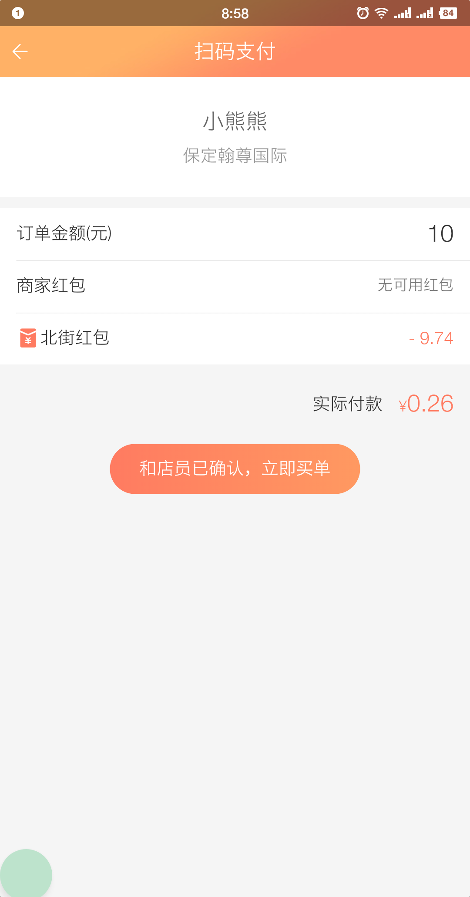
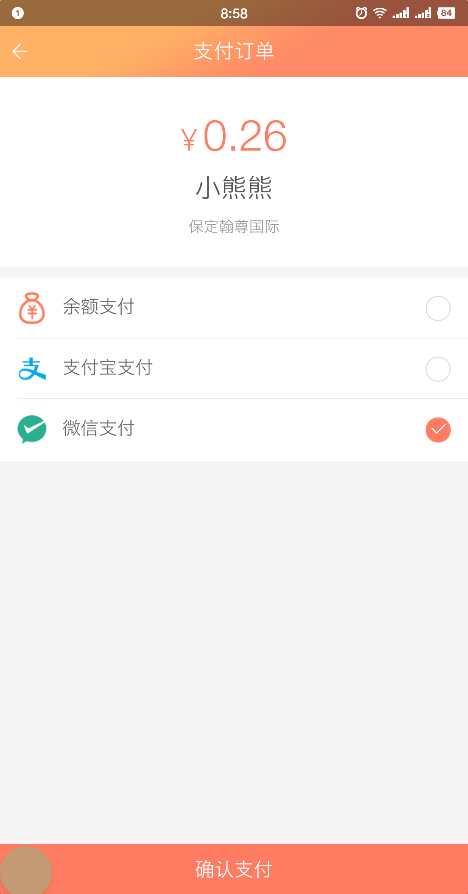

最近的项目里，有一个需要红包的功能，大概的需求如下
1.商城管理平台可以发放随机红包，金额和个数可在后台自行设置，红包随机分配，类似微信红包，允许少数人领取到大包，少数人领取到小包，大多数人领取金额差不多，
2.红包发送后，在app客户端会受到抢红包的提示，用户开始抢红包
3.同一时间，只允许存在1个可领取的群发红包，用户对每个红包只能抢1次
4.红包有有效期，过期后不可使用
5.平台可以实时查看红包使用明细，并可以导出
恩，差不多就是这些需求了，还有些小细节的地方就不多说了，只看这些内容，来看一下我们的实现思路
从这个需求来看，一个红包的生命周期可以分为三个阶段
发送红包->领取红包->使用红包
首先，来看怎么解决发红包的问题
根据用户需求，红包的发送类似微信拼手气红包，不同的是这个红包有有效期，
那么这个问题我们在细分成两个部分，一是把红包列表生成出来，二是给这个红包设定一个有效期，过期自动作废
代码设这样的
1 | /// <summary> |
这个方法里最核心的代码是这两行
1 | safe_total = (amount - (count - i) * min) / (count - i);//随机红包值的安全上限 |
需要一定的数学知识才可以理解，涉及到了数学期望，正态分布等概率问题（没错，我从网上抄的现场算法，我也不懂，大学那点数学知识差不多都就着白粥喝了🙂）
红包发完后，需要将这个列表保存起来，每次领红包的时候从字典里找，我是把这个列表存在了Redis里

红包列表生成之后，需要把红包主信息（非列表）存储起来（看也无需求，由于我们的项目需要查看红包使用明细，所以我是要把红包主信息存到关系数据库里的，这个我就不展示了），同时
需要设定一个定时任务来保证红包到期自动作废
计划任务的代码如下
1 | /// <summary> |
可以看到，我并没有用流行的计划任务插件（如Quartz，FluentScheduler，我用过后者，的确很强大）来做这件事，当然可能用插件的效果也很好，我觉得，只要是在生产环境中，网站的运行都是相对稳定的，所以用了多线程的方式来处理这个问题
代码也非常简单，实测也很有效
到这，发红包的流程就走完了，接下来是领红包
关于领红包和用红包的部分，我是在接口中做的，因为要和app对接，代码也相对简单一些
因为在领红包和用红包的时候，都是需要先判定红包有效性的，所以我写了一个公共的静态方法，可以根据不同的返回值来判定使用红包时的各个场景
1 | /// <summary> |
简单说一下，Response是我自己定义的一个返回类型值，其中data字段是dynamic类型的，动态解析效率虽然没有强类型赋值高，但胜在够方便
不同的使用场景根据不同的code值可以根据返回的data值来组合,通过了上面函数的验证，可以发现，只要返回值code为1，就说明用户可以去抢红包
抢红包时，是从redis中取出giftlist，然后发到用户的账户里，这里还是需要将领取记录存储起来，这块的代码我也不展示了，真没什么可说的
在接下来就是使用红包了，根据客户需求，在每次扫码支付，输入完金额后，会根据订单金额，自动判断红包是否可以使用，同时记录使用详情，如果订单取消后，则红包恢复，可继续使用
关于这点的判断，在逻辑里，也可以沿用如上方法，只要返回值code位2，则可使用红包，在生成订单的时候在去除掉该金额即可，比较简单，就不展示代码了，
贴一下成品图吧






好了，至此，一个群发红包的功能就介绍完了，回头看，发现还是蛮简单，其实做项目做产品，最重要的还是思路清晰，明朗，这只是个小例子，而且我相信各位肯定有更好的实现方式，就别吐槽我代码写的烂了，关键是思路思路~哈哈😄